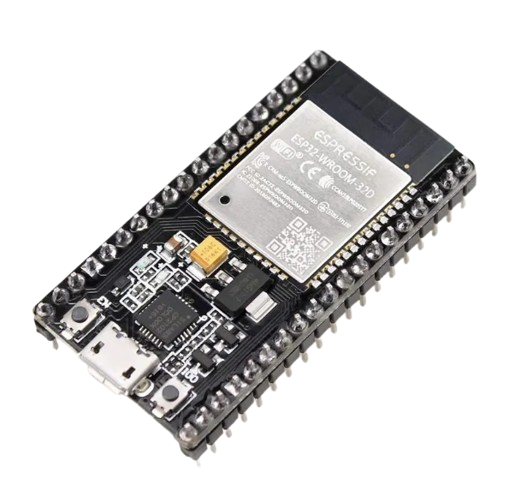

ESP32
The ESP32 is a powerful microcontroller with Wi-Fi and Bluetooth, ideal for IoT and embedded systems. It features dual-core processing, low power consumption, and multiple interfaces like GPIO, ADC, DAC, and UART. Widely used in automation, robotics, and smart devices, it offers high performance and extensive developer support.